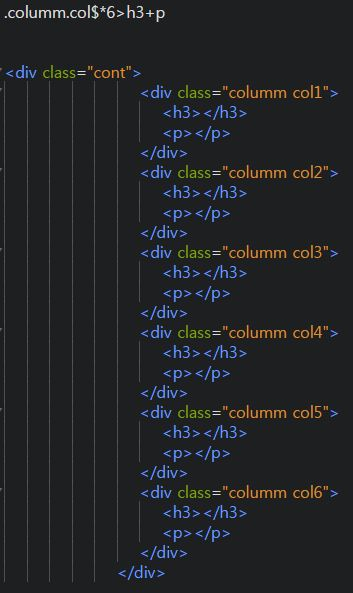

2020.03.11
브라켓 확장기능
- Emmet : 단축키
- Custom work : 상단에 탭 메뉴 기능
- Beauty : 코드정렬
- Indect Guide : 코딩 라인 가이드
단축키
- 복사하기 Ctrl + C
- 붙혀넣기 Ctrl + V
- 전체 복사하기 Ctrl + A
- 4칸 이동하기 Tab
- 4칸 반대로 이동하기 Shift-Tab
- 요소 이름 다음에 바로 오는 속성은 요소 이름과 속성 사이에 공백이 있어야 되고, 하나 이상의 속성들이 있는 경우엔 속성 사이에 공백이 있어야 합니다.
- 속성 이름 다음엔 등호(=)가 붙습니다.
- 속성 값은 열고 닫는 따옴표로 감싸야 합니다.
Photoshop Cheetsheet
포토샵 단축키
- 코딩 여러개 만들기 ul>li*10 + Tab
- 새 파일 만들기 : Ctrl + N
- 레이어 패널 : F7
- 작업 취소하기 : Ctrl + Z
- 히스토리 : Window > 히스토리
- 이미지 불러오기 : Ctrl + O
- 실제화면 100% 비율로 조절 : Ctrl + 1
- 화면 확대하기 : Ctrl + +
- 화면 축소하기 : Ctrl + -
- 화면 이동하기 : Space 누르고 화면 이동
- 작업창 분할 : Window + arrange
- 환경설정 : Ctrl + K
- 컴퓨터 효율성 확인 : F8 > 패널옵션 > Efficiency
- 전경색 바꾸기 : Alt + Del
포토샵 유용 홈페이지
포토샵 유용 홈페이지
- 이미지 다운 : https://unsplash.com/
- 이미지 색상 : https://materializecss.com/color.html
- 폰트 : https://noonnu.cc/
2020.03.12
HTML.Layout
- 기본 코딩 유형 자동 : ! + Tab - 코딩
- ex) div 선택자 / { width 속성,가로 100% ; height 속성값,높이; background: red
- 행 복사 Ctrl + D - 코딩
- # > id - 코딩
- width > w(100p) p는 %를 의미 - 코딩
- height > height - 코딩
- bgc#색상 (#은 색상코드를 의미) -코딩
- line-height 글씨가 중간으로 - 코딩
- 가이드라인 만들기 줄자 - Ctrl + R - 포토샵
- Shift 누르고 이동하면 자동으로 맞춰짐 View>Snap 확인- 포토샵
- i > 스포이드- 포토샵
- 바탕 색상 입히기 - Alt + Delete - 포토샵
- 레이어 복사 Ctrl + J - 포토샵
- 텍스트 여러개 한번에 합치기(이미지로) Ctrl + E - 포토샵
- 색상변경 Ctrl + U - 포토샵
2020/03/13
- EntityCode< 모든 코드를 정리한 홈페이지
- WEBSTANDARD< 레이아웃 웹사이트 튜토리얼 홈페이지
2020/3/16
- Emmet< Emmet 명령어 단축키 홈페이지
- Shift + Home : 앞줄 전체 선택
- Shift + End : 뒷줄 전체 선택
- ol은 숫자로 정렬 li는 순서대로 정렬
- Ctrl + Shift + i 영역만선택 (포토샵)
- Shift + Ctrl + U > 흑백변경(포토샵)
2020/3/17
- 레이아웃 참고용 홈페이지< 레이아웃 참고용 홈페이지
- /* 전체 영역 */ < 주석표시로 가독성을위해 문단을 나누는것, 실제 표시 X
- ul>li*2>ol>li*3 < li 안에 한번 더 ul 또는 ol 를 넣을 수 있다.
- width 와 height 값은 기본값이 100%이기에 동일한 숫자를 사용할땐 생략해도된다.
- fill page screen capture - 구글 풀스크린 캡쳐
- height: inherit < 가운데영역 코드를 한번에 정리할 수 있다.
- id , class 코드 차이, 둘다 태그를 식별하기위한 선택자이나, id는 1개만 사용할 수 있고, class는 여러개를 사용할 수 있다.
- background-color: rgba(0,0,0,0.3) < (0,0,0) 이미지 색상을 r g b 순으로 입력해준뒤, 뒤에 0.3 은 투명도 조절
css
2020/3/18
rowspan은 표를 만들때 밑으로 합쳐주는 코드이며, 숫자값 2를 표시할시 2줄을 합쳐준다는 뜻colspan은 표를 만들때 오른쪽으로 합쳐주는 코드이며, 숫자값 2를 표시할시 2줄을 합쳐준다는 뜻- Figma : 모바일 앱 및 디자인 가능한 프로그램
br태그를 쓸 경우 표 안의 글씨가 한줄 밑으로 내려가서 작성됨table은 위 아래의 갯수가 같아야 깨지지 않는다.- ca = 가로로 가운데로 모아줌 va = 세로로 가운데
2020/3/19
decoration밑줄의 색상을 변경hover- 마우스를 오버했을때의 색상을 변경border- 테두리에 색을 주는것solid- 라인text decoration밑줄을 없애줌- 포토샵은 비트맵+벡터 점을 이어서 만듬
- 일러스트 벡터방식 (좌표값,웹사이트용)
일러스트
- Ctrl + K 설정
- Ctrl + D 줄복사
- Pathfinder Shift+ Ctrl +F9
- Layers - F7
2020/3/20
- 주석은 하고싶은 영역을 드래그 한 후 Ctrl + 슬래쉬 /
- background: url(../img/header_bg.jpg) repeat-x center top; } - 세개를 한번에 합치는 속귀형
- 만약에 폰트가 없을때 웹폰트를 넣으면 자동으로 다운 받아짐 -단점은 조금 느려짐
display: block인라인구조이지만 블록구조로 변경 블록구조는 한줄에 하나만 표현display: inline-block인라인구조를 가지면서 블록구조로 바꿔라- 코딩언어 정리 홈페이지
2020/3/23
네이버 웹표준https://nuli.navercorp.com/
다음 웹표준http://darum.daum.net/
overflow: hidden; = ovh
position: absolute; = poa
2020/3/24
-

- $표시를쓰면 숫자가 순서대로 표현됨 1 2 3, $$두번을쓰면 01 02 식으로
relative기준점을 설정해주는 값
2020/3/25
- $표시를쓰면 숫자가 순서대로 표현됨 1 2 3, $$두번을쓰면 01 02 식으로
relative기준점을 설정해주는 값
2020/3/26
세계에서 가장 많이쓰는 csshttps://getbootstrap.com/
2020/3/27
- 부트스트랩
- css 플레임 워크
2020/3/31
- 컨트롤 d 누르고 태그를 클릭하면 게속 다음거가 선택됨
- 알트 누르고 하면 전체적으로 글씨를 쓸수있음
- 드래그하고 알트를 누르고 옮기면 줄이 옮겨짐
2020/4/1
https://codepen.io/seunggyu/pen/wvaZgzW 코드펜
2020/4/2
https://webgradients.com/ 그라디언트 색상
https://gsnedders.html5.org/outliner/ 자바 아웃라인 URL
2020/4/6
상위 (부모)박스에 폰트사이즈를 가지고 오는것; em>
2020/4/7
CSS3의 transform 속성은 Flash 나 JavaScript를 사용하지 않고 요소를 애니메이션 시키거나 시각적 및 상호 작용의 효과를 풍부하게 제공하고 있습니다.
그 중 translate () 함수는 기본적으로 X 축과 Y 축을 따라 지정된 거리만큼 요소를 이동시킬 때 사용합니다.
기본 코딩은 그렇게 복잡하지 않습니다.
transform：translate(x, y)、translateX()、translateY()、translateZ()、translate3d() 등의 함수로 이동 거리를 지정합니다.
2020/4/9
figure
figure는 사진, 이미지, 다이어그램 등을 감싸는 요소입니다.
figcaption
figcaption은 figure 요소에 캡션을 만듭니다. figure 요소의 자식 요소이며, 제일 처음 또는 제일 마지막에 위치시킵니다.
2020/4/13
라이트 박스
.lightbox a {float: left ;width: 19%; margin-right: 0.5%; }
display: flex 여러개의 박스가 있을 때
.lightbox {display: flex; flex-wrap: wrap; justify-content: space-between;}
.lightbox a {width: 19%;margin-bottom: 1%; }
display: grid 처음부터 레이아웃을 잡을때